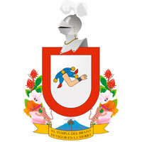

Durante la era prehispánica, la región que hoy ocupa el estado de Colima fue el punto de asiento de varios grupos étnicos que florecieron en el Occidente Mexicano. La región estuvo habitada por varios señoríos que se disputaban el territorio antes de la llegada de los conquistadores de Europa que ahora denominamos españoles. A principios del siglo XVI, los purépecha alcanzaron a dominar hasta las salitreras de Tzacoalco, propiedad de los tecos, a causa de esto el Rey Colimán o Tlatoani Colimotl les hacía la guerra y en muchas ocasiones les derrotó, tras la Guerra del Salitre con la que los Tecos tomaron Sayula, Zapotlán y Amula e incluso alcanzaron a llevar su dominio hasta Mazamitla, logrando que el señorío de Colima se convirtiera en el grupo predominante. Después de que los europeos llegaron a un acuerdo con los purépechas, un emisario de Hernán Cortés, de nombre Francisco Montaño, de los primeros que se había aventurado hasta la capital del imperio PurépechaTzintzuntzan, recogió y dio a conocer a sus superiores información que decía que al poniente del Señorío del Caltzontzin se encontraba un lugar dominado por el Rey Colimotl. Hernán Cortés, pensó en conquistar Colima, pero Juan Rodríguez de Villafuerte precipitó sus planes al desobedecer sus órdenes y ser el primero en explorar la zona, a su llegada a Trojes es derrotado en una emboscada del Rey Colimán. Poco después Cortés decidió encargarle la empresa a Francisco Álvarez Chico. Este salió con un pequeño ejército por el camino de Toluca, hacia la costa del señorío Purépecha, hoy Michoacán. Existen diversas especies de flora, según la región de que se trate: en las partes altas predominan el pino, roble, encino, arrayán; en los valles hay especies forrajeras y frutales como mango, papaya, tamarindo, palma de coco; mientras que la costa cuenta con guamúchil, guayacán, mezquite, chicalite, crucillo y mangle. De este último podemos encontrar dos clases: el mangle blanco y el mangle rojo. Ambos juegan un papel muy importante en la preservación del equilibrio en los ecosistemas que se refieren al estero, que es donde se une el mar con agua dulce, además de que es una irreemplazable barrera natural contra posibles tsunamis, huracanes e inundaciones. Por su diversidad de ecosistemas, en el Estado de Colima existe una extensa variedad de fauna silvestre: ardilla, jabalí de collar, venado cola blanca, ocelote, tigrillo, zorra en las sierras; mientras que en los valles hay especies como tapacaminos, torcaza, zanate, tlacuache, tzentzontle, conejo y coyote. Respecto de la fauna marina, ésta se conforma por pez dorado, tiburón, cornuda, aguijón, tortuga de carey, entre otros. Entre los platillos colimenses más gustados y representativos del Estado están los sopitos -pequeñas tostadas cubiertas con picadillo y bañadas en "jugo"-; los sopes gordos, de pata, lomo de cerdo o pollo; y las tostadas de las mismas carnes y preparadas sobre tortillas raspadas y doradas. El pozole (maíz cocido) con carne de cerdo es la merienda tradicional, con la característica de ser seco y jugoso, estos platillos se pueden degustar en la famosas cenadurías que existen por toda la ciudad. Otros guisos típicos son el tatemado -carne de cerdo macerada en vinagre de coco y guisada en chile colorado-, la pepena -vísceras de res guisadas-; y la cuachala -maíz martajado y cocido con pollo deshebrado-. Las variedades locales del tamal son pata de mula -de frijol, envueltos en "hoja" de maíz, no en totomoxtle-; los de carne y los de elote tierno, así como los de ceniza. Comala se distingue por la producción de productos lácteos, como quesillo ranchero, panela y crema, así como los populares ponches bebida alcohólica, preparada mezclando aguardiente de caña o licor con agua, azúcar, café, cacahuete y otras frutas siendo en especial el ponche de granada la combinación más popular, así mismo se distingue por sus botaneros alegres lugares para pasar un rato a gusto con la familia; también, junto con Villa de Álvarez, por su pan dulce, del que destacan los bonetes o picón de huevo.
